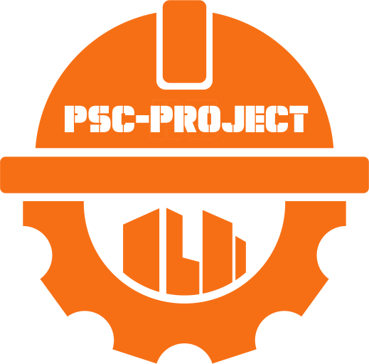

Selamat Datang!
Aplikasi Penghitung Rencana Cut & Fill
by: Petra Sola Christian
Mulai Sekarang
PENGHITUNG RENCANA CUT & FILL
Project by: Petra Sola Christian
Kontrol Utama
Jumlah Patok:
Buat Tabel Input
Hitung Volume Cut & Fill
Grafik Volume Cut & Fill